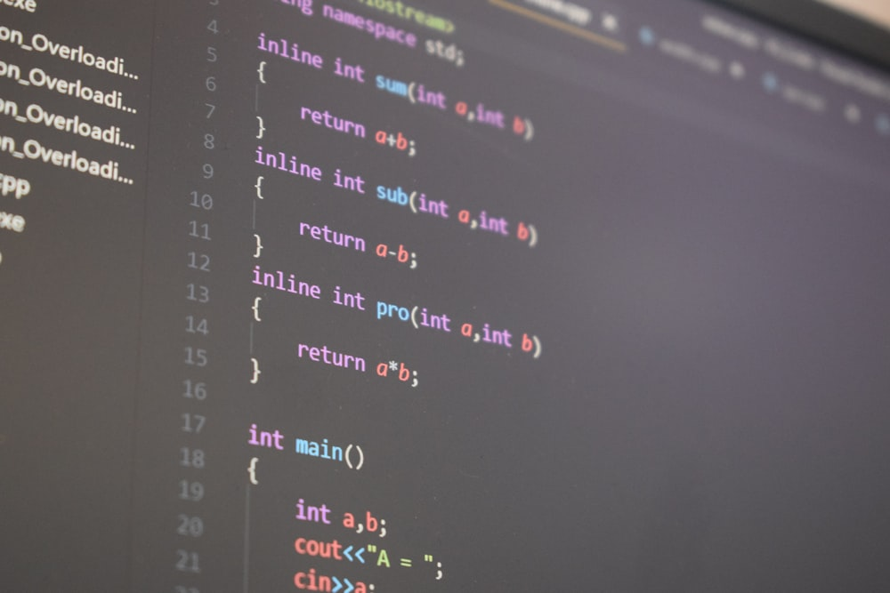

Lập trình C cơ bản - Ứng dụng của ngôn ngữ C
1. Ngôn ngữ C là gì?
Ngôn ngữ C là một ngôn ngữ lập trình máy tính được phát triển bởi Dennis Ritchie vào những năm 1970 tại Bell Labs. C là một ngôn ngữ lập trình mạnh mẽ, có hiệu suất cao, và được sử dụng rộng rãi trong phát triển phần mềm hệ thống, phần mềm nhúng, ứng dụng máy tính cá nhân, và nhiều lĩnh vực công nghiệp khác.

C được chú trọng vào việc quản lý bộ nhớ và cung cấp nhiều tính năng gần
gũi với cấu trúc máy tính, giúp lập trình viên có kiểm soát chi tiết hơn
về cách dữ liệu và mã máy được xử lý. Nó cũng có một cú pháp đơn giản và
mạnh mẽ, giúp trong việc phát triển phần mềm hiệu quả và dễ bảo trì.
Ngôn ngữ C đã tạo nền tảng cho nhiều ngôn ngữ lập trình khác, bao
gồm C++, C#, và nhiều ngôn ngữ khác. Ngoài ra, nó cũng là ngôn ngữ phổ
biến cho việc viết hệ điều hành và phần mềm nhúng do khả năng kiểm soát
phần cứng của nó.
2. Ứng dụng của ngôn ngữ C
Ngôn ngữ C có nhiều ứng dụng khác nhau trong nhiều lĩnh vực khác nhau do tính linh hoạt, hiệu suất cao và khả năng tương tác gần gũi với cấu trúc máy tính. Dưới đây là một số ứng dụng phổ biến của ngôn ngữ lập trình C:
-
Hệ điều hành: C được sử dụng rộng rãi trong việc phát triển hệ điều hành. Hầu hết những hệ điều hành phổ biến hiện nay đều được viết bằng C như UNIX, Linux, Windows hay MacOS.
-
Phát triển phần mềm hệ thống: C là một ngôn ngữ lý tưởng để phát triển phần mềm hệ thống, chẳng hạn như trình quản lý cơ sở dữ liệu (SQLite, MySQL, Berkeley DB), trình quản lý tập tin (ext4 trên Linux và NTFS trên Windows), và các thành phần quan trọng của hệ thống máy tính.
-
Phát triển ứng dụng nhúng: C thường được sử dụng trong việc phát triển phần mềm nhúng, tức là phần mềm chạy trên các thiết bị như điện thoại di động, thiết bị y tế, thiết bị điều khiển công nghiệp, hệ điều khiển động cơ, trò chơi điện tử và nhiều ứng dụng khác. Ví dụ các hệ máy chơi game như PlayStation và Xbox, hay hệ điều hành Android / iOS, đều được viết bằng C.s
-
Phát triển ứng dụng máy tính cá nhân: C vẫn được sử dụng để phát triển ứng dụng máy tính cá nhân, đặc biệt là trong các lĩnh vực đòi hỏi hiệu suất cao như các trò chơi máy tính và phần mềm đồ họa. Ví dụ như các tựa game trên steam được viết bằng Unity và Unreal Engine, phần lõi của các phần mềm này đều được viết bằng C.
-
Phân tích số liệu và tính toán khoa học: C thường được sử dụng trong các ứng dụng liên quan đến tính toán khoa học và phân tích số liệu. Ví dụ các thư viện sử dụng trong lĩnh vực khoa học dữ liệu và máy học (machine learning) như OpenCV và TensorFlow cung cấp API cho C/C++ để phát triển các ứng dụng trong lĩnh vực này.
-
Viết thư viện và framework: C thường được sử dụng để viết thư viện và framework mà các lập trình viên có thể sử dụng để phát triển ứng dụng cho nhiều mục đích khác nhau. Một số thư viện được viết bằng C như OpenGL, OpenSSL, GTK+ (GIMP Toolkit),...
3. Tại sao cần phải học C?
-
Nền tảng kiến thức: C là một trong những ngôn ngữ lập trình cơ bản và cổ điển nhất. Hiểu rõ về C sẽ giúp bạn nắm vững các khái niệm cơ bản trong lập trình, cú pháp, và quản lý bộ nhớ, điều này sẽ giúp bạn dễ dàng học và làm việc với các ngôn ngữ khác. Vì C là nền tảng của mọi ngôn ngữ, các ngôn ngữ lập trình khác đều được xây dựng dựa trên C.
-
Hiệu suất cao: C là một ngôn ngữ hiệu suất cao, cho phép bạn kiểm soát trực tiếp tài nguyên máy tính. Điều này rất quan trọng khi bạn cần phát triển ứng dụng yêu cầu xử lý nhanh hoặc đòi hỏi quản lý tài nguyên hiệu quả, chẳng hạn như hệ điều hành, phần mềm nhúng, hoặc ứng dụng đòi hỏi hiệu năng cao.
-
Học cú pháp cấu trúc: Ngôn ngữ C dạy bạn cách sử dụng cú pháp cấu trúc, một kỹ thuật lập trình quan trọng. Điều này giúp bạn viết mã sạch sẽ, dễ đọc và bảo trì.
-
Phát triển hệ điều hành và phần mềm hệ thống: C là ngôn ngữ phù hợp để phát triển hệ điều hành và các phần mềm hệ thống quan trọng. Nếu bạn quan tâm đến lĩnh vực này, học C là cần thiết.
-
Hiểu cách hoạt động của máy tính: C cho phép bạn hiểu rõ hơn về cách máy tính hoạt động. Điều này sẽ giúp bạn hiểu rõ luồng hoạt động của mọi dòng code bạn viết ra và từ đấy, trở thành một lập trình viên giỏi hơn. Các lập trình viên nằm ở TOP đều phải nắm rõ cách mọi thứ vận hành.
-
Giải quyết vấn đề: Học C giúp bạn phát triển kỹ năng tư duy lập trình và giải quyết vấn đề. Giải quyết nhiều bài toán khác nhau với C giúp bạn tiến tới giải được những bài toán thực tế có độ khó lớn hơn rất nhiều.
4. Ngôn ngữ C hoạt động như thế nào?
Quá trình biên dịch trong C chuyển đổi mã mà con người có thể đọc thành định dạng mà máy có thể đọc được. Đối với C, việc này xảy ra trước khi chương trình bắt đầu thực thi để kiểm tra cú pháp và ngữ nghĩa của mã. Quá trình biên dịch trong C bao gồm 4 bước: tiền xử lý (pre-processing), biên dịch (compiling), tập hợp (assembling) và liên kết (linking), sau đó chúng ta chạy file thực thi thu được để xuất ra màn hình kết quả.
4.1 Biên dịch là gì?
Giả sử có 2 người đang nói chuyện với nhau, anh A đến từ Úc nói tiếng
Anh còn anh B đến từ Việt Nam. Để 2 anh này có thể hiểu nhau nói gì thì
một trong hai người phải biết ngôn ngữ của người kia, ví dụ anh A sử
dụng Google Dịch để dịch tiếng Anh sang tiếng Việt, quá trình dịch này
có thể hiểu là quá trình biên dịch.
Đối với máy tính cũng vậy, bản thân máy tính chỉ hiểu các kí tự
01010101000, hay còn gọi là mã máy (Machine Code). Chính vì thế cần có
trình biên dịch đứng ở giữa giúp chuyển đổi những dòng code ta viết ra ở
dạng con người hiểu (ABC) sang dạng nhị phân (000 0000) để máy tính
hiểu, các bạn có thể tìm hiểu thêm về ASCII để hiểu rõ hơn.
4.2 Quá trình biên dịch trong C
Quá trình biên dịch trong C diễn ra qua 4 bước: tiền xử lý (pre-processing), biên dịch (compiling), tập hợp (assembling) và liên kết (linking). Giờ chúng ta sẽ cùng nhau phân tích từng bước thông qua những ví dụ cụ thể nhé.